레진코믹스 추천 인기 순위 TOP 30
레진코믹스에서 지금 연재 중인 작품을 레진코믹스 공식 인기 순위 순서로 모았어요. 네이버웹툰·카카오웹툰·레진코믹스에서 조건에 맞는 작품 439개 중 인기 순으로 30개를 골랐어요. 인기 TOP 3: 일하지 않는 두 사람, 종말의 발키리, 남고 소년
2026-11-17 기준 · 성인 작품 제외
내 취향으로 더 좁혀서 추천받기 →-
1
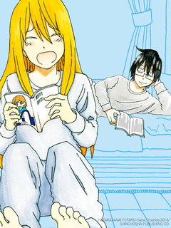
-
2
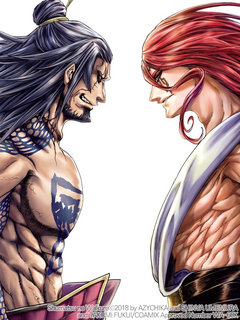
레진코믹스종말의 발키리
천 년에 한 번, 천계에서 개최되는 '인류 존망 회의'에서 신들은 인류의 멸망을 결정한다. 그것을 뒤엎기 위해 그들을 막아선 것은 인류 사상 최강의 13인!! 그리고 그들을 영격하는 것은 천계 최강의13신!! 인류의 존망을 건 싸움이 지금 시작된다―!!! *감수:TAKUMI FUKUI…
단행본액션판타지이능력레진코믹스에서 보기 → -
3
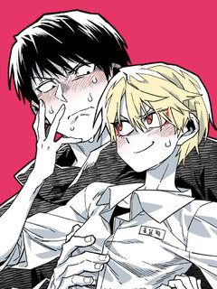
레진코믹스남고 소년
대문 남고의 유일한 홍일점인 '홍일탁'. 물론 이름과 별명과는 다르게 남자다. 왜소한 체격과 곱상한 외모 덕분에 찐따부터 일진에 이르기까지 자신을 무시하기에 이르고 교내 서열 꼴찌에 머무르고 있었다. 과거, 중학교 2학년까지만 해도 유명한 일진이었던 일탁은 자신의 한 문제로 인해 먹이…
BL개그성장물숏드라마스낵타임레진코믹스에서 보기 → -
4
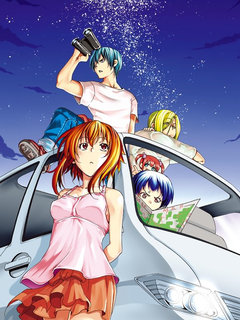
레진코믹스그랑블루
<바보와 시험과 소환수> 개그물 본좌 이노우에 켄지 최신작!! 어느 스쿠버 다이빙 동호회의 엉망진창 천태만상! 대학에 합격해 다이버 숍을 운영하고 있는 삼촌이 사는 곳으로 이사오게 된 키타하라 이오리. 스쿠버다이빙 동아리에 얼떨결에 가입하게 된 후 그의 파란만장한 다이빙―보다 술에 빠…
개그레진코믹스에서 보기 → -
5
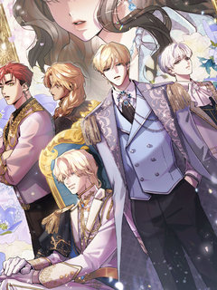
레진코믹스집착당하면 파멸합니다 [연재]
눈을 떠보니 모르는 곳이었다. 혼란스러운 가운데 이정표가 될 것은 휴대폰 뿐. 기억을 찾아 돌아가기 위해선 공략 대상들의 호감도를 채우고 특별한 엔딩을 봐야 한다. 그래서 열심히 공략 대상들과 엮였고, 호감도를 하나 둘 채웠다. 얼핏 순조로운 듯했다. 새로운 알림이 오기 전까진. 『공…
서양로판까칠남철벽녀집착남레진코믹스에서 보기 → -
6
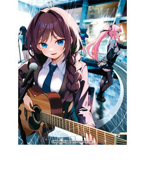
레진코믹스한밤중 하트튠
「한밤중에 혼자 침대 위에서 듣던 네 목소리만이 구원이었어. 다시 한번 너와 얘기하고 싶어. 하고 싶은 말이 있어.」 고등학교 2학년 야마부키 아리스는 '아폴로'라는 이름의 얼굴도 본명도 모르는 라디오 진행자 소녀를 찾고 있었다. 하지만 어느 날, 아리스는 합병된 여학교 방송부에서 아…
현대물소년물학원물로맨스레진코믹스에서 보기 → -
7레진코믹스
인투 더 로즈 가든(Into the Rose Garden) [개정판][연재]
[4회 연재 후 1회 정기휴재] Winterbaum 작가의 대표 BL소설 <인투 더 로즈 가든> 웹툰화! 명문 귀족임을 자랑스러워 하던 에이록은 우연히 마주친 하급 귀족 가문의 클로프에게 첫눈에 반한다. 에이록은 신분 격차, 재력 차이는 물론, 같은 알파라는 금기조차 개의치 않고 다가…
복수극강공미인수집착물혐관레진코믹스에서 보기 → -
8레진코믹스
찬란한 어둠 [개정판][연재]
[매월 5,15,25일 연재 / 5화 연재 후 1회 정기 휴재] 불우한 성장기를 극복하고서 천재 바이올리니스트로 세계에 이름을 알린 정난우. 그는 겹겹이 쌓인 내면의 어둠을 벗어나지 못하여 힘들어한다. 할리우드 미남 배우이자 바람둥이로 소문난 에녹 밀리건. 그는 매력적인 얼굴 외에 연…
설렘폭발미인수강공성장물소심수레진코믹스에서 보기 → -
9
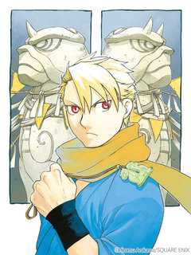
레진코믹스황천의 츠가이 [연재]
미증유의 츠가이 배틀, 개막!! 산속 작은 마을에서 짐승을 사냥하며 대자연 속에서 조용히 살아가는 소년, 유르. 그러나 유르의 쌍둥이 여동생 아사는 어째서인지 마을 깊숙이 자리 잡은 감옥 안에서 어떠한 '책무'를 수행하고 있다. 흡사 그곳에 유폐 당한 것처럼.... 평화로운 마을에 떠…
소년물판타지액션레진코믹스에서 보기 → -
10
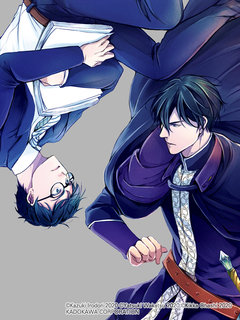
레진코믹스[비애] 이세계 사정은 사축 하기 나름
콘도 세이치로는 매일 일에 쫓기는 30대 직전의 직장인. 성녀 소환 계획에 휘말려 이세계의 로마니 왕국으로 전이된 후에도 ‘버릇’을 못 버리고 스스로 일을 찾아 계속 일하고 있었다. 그것이 ‘얼음의 귀공자’라 불리는 기사단장 알레슈와 급속도로 접근하는 계기가 되는데━ ©Kazuki I…
미남공단정수이세계냉혈공BL레진코믹스에서 보기 → -
11
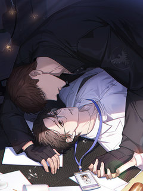
레진코믹스테소로 오브 더 가이드 [개정판][연재]
이능력자 폭주율이 높기로 소문이 자자한 F12 센터. 그곳으로 발령받게 된 진단 검사관 '백시진'. 첫 출근한 시진은 행정과라며 신분을 숨긴 채, 의도적으로 접근한 A급 가이드 '정태율'을 만나게 된다. \\
강공연상수연하남재회집착물레진코믹스에서 보기 → -
12
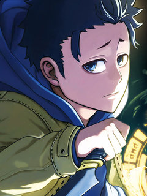
레진코믹스잡용 부여술사가 자신의 강함을 눈치챌 때까지
“부여술사”로서 철저한 서포트를 해주던 비전투원 빔 슈트라우스는 동료를 위기에서 구하기 위해 직접 나서서, 단독으로 계층주를 쓰러뜨리는 것에 성공한다. 그러나, 그는 공을 가로챘다며 격앙된 리더 크로노스에 의해 파티에서 추방되고. 갈 곳을 잃고 망연자실하던 빔은 소꿉친구인 하이데마리에…
서양소년물성장물액션판타지레진코믹스에서 보기 → -
13레진코믹스
내 매니저를 소개합니다 [개정판][연재]
천사 같은 외모의 대한민국 톱배우, 지현. 지현에게는 7년 동안 자신의 곁을 지키는 매니저, 은호가 있다. 섬세한 외모만큼이나 까다로운 성격인 지현의 예외이자 '유일한 존재'인 곽은호가. 그런 은호에게는 한 가지 비밀이 있다. 바로 친구이자 자신의 배우인 지현을 남몰래 짝사랑하고 있다…
짝사랑다정수순정남미남수현대물레진코믹스에서 보기 → -
14
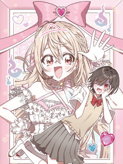
레진코믹스다 보이는데요! 아이자와 양
신경쓰이는 그 아이는 전 아이돌 ……이자 유령?! 옛날부터 유령을 볼 수 있었던 쿠로토리 미치는 최대한 엮이지 않도록 보이지 않는 척해왔다. 하지만 생전 인기 아이돌이었던 유령, 아이자와 호나미가 교실에 나타나게 된 뒤부터 일상에 변화를 맞이하게 되고?! 호나미의 열렬한 팬 서비스(?…
로맨틱코미디오컬트소심녀순수녀상큼녀레진코믹스에서 보기 → -
15
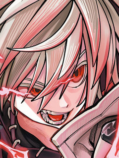
레진코믹스파이널 전생 ~꽝 스킬만 나오는 나와 각 이세계 최강의 동료들~
이세계 전생으로 「나GANGHAEEEE」를 꿈꾸는 소년은 염원이 이루어져 전생을 성취하지만 손에 넣은 것은 치트가 아니라 꽝 스킬!? 아쉬운 죽음을 반복할 때마다 스킬을 받지만, 얻는 스킬은 꽝뿐이다. 그런 그가 5번째 전생에서 당첨을 뽑았다…?! 이세계의 만남과 경험이 개화하는 「나…
회귀이세계성장물이능력판타지레진코믹스에서 보기 → -
16
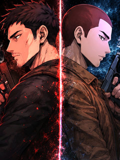
레진코믹스엑소더스 [연재]
사람들은 헬조선이라 말하며 대한민국에서 사는 게 너무 힘든 일이라고 말한다. 그런데 정말 이 한반도가 진정한 헬조선이 되어 떠나야만 하는 상황이 벌어진다면! 대 멸절의 위기를 앞둔 한반도. 한반도 8천만 명의 인구가 이주할 신세계를 찾아야만 한다.
현대물전쟁복수극액션레진코믹스에서 보기 → -
17
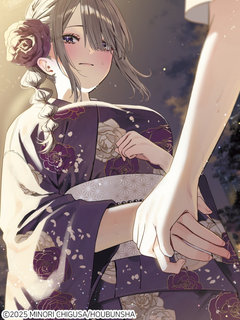
레진코믹스편리한 세미프렌드
아싸 고등학생 스우나는 오늘부터 기숙사 생활. 긴장한 채 방에 들어갔더니 그곳에는…… 여자와 진한 스킨십 중인 룸메이트 루카의 모습이! ‘세프’가 없으면 곤란하다는 루카에게 스우나는 무심코 ‘세(미)프(렌드) 계약’을 제안하는데…?
친구>연인순진녀동거설렘폭발GL레진코믹스에서 보기 → -
18
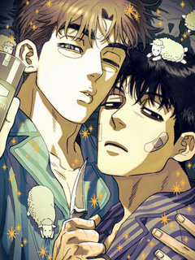
레진코믹스킬러가 사랑에 빠졌을 때
[속보] 프로 킬러 주태만이 국내 최고의 배우 강다혁에게 반해버렸다! 극강의 훈련과 교육 그리고 잔인한 고문도 견뎌낸 프로 킬러 주태만, 그러나 어째서인지 강다혁의 다정함에는 손쉽게 무너지는데...? ㅡ 프로킬러 NN년차, 설마 이게 바로 사랑? 그러면 이럴 때는 어떻게 해야 하지?
직진수헌신수능력수얼빠수미남공레진코믹스에서 보기 → -
19
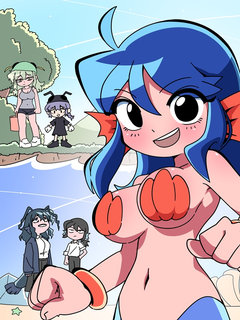
-
20
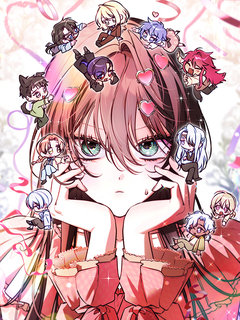
레진코믹스두근두근 공략기 [연재]
하렘이야말로 미연시의 메인 콘텐츠다! 밤새 미뤄뒀던 게임을 하다 잠이 든 다은은 다른 세계에서 처음 보는 인물이 되어 눈을 뜬다. 온통 처음 보는 것들과 마주하고 당황한 것도 잠시, 이곳이 ‘미연시’ 게임 속임을 파악하고 ‘디아나 블량쉐’가 되어 주위 캐릭터들을 공략하기 시작한다. 디…
능력녀회귀역하렘게임로판레진코믹스에서 보기 → -
21
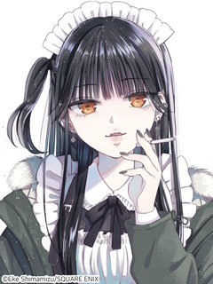
레진코믹스동경하는 메이드는 담배가 잘 어울려
제가 동경하는 그 사람은, 담배가 잘 어울리는 메이드였습니다. 선배 메이드 히지리와 그녀를 동경하는 신입 메이드 스우. 히지리를 통해 알게 된 새로운 세상은 두근거림으로 가득한데…?! SNS에서 대인기! 개성넘치는 메이드가 엮어 내는 시가렛 로맨스
현대물성장물설렘폭발짝사랑GL레진코믹스에서 보기 → -
22
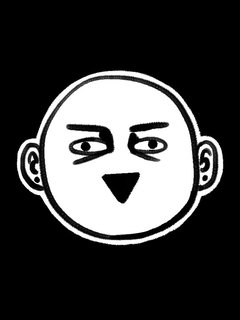
-
23
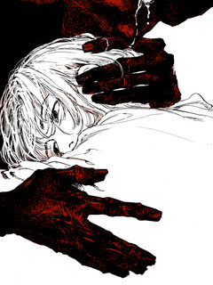
-
24
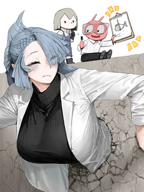
-
25
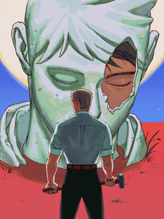
레진코믹스불멸의 날들
오랜 연구 끝에 인류는 더이상 죽지도 다치지도 않게 된다. 하지만 언제나 돌연변이는 존재하는 법. 죽을 수 있는 존재로 태어난 '멸'은 불사의 사람들 사이에서 갖은 고생을 하며 살아간다. 외로이 고군분투를 하며 지내던 때, 멸은 자신과 같은 돌연변이 해결사 '필'을 만나게 된다. 그리…
액션레진코믹스에서 보기 → -
26
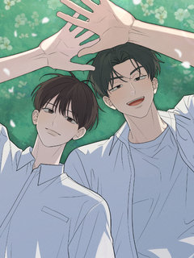
레진코믹스오류탐구영역
중학생 때까지 전교 1등을 놓쳐본 적 없는 '오승표'는 고등학교 진학 후 '류재민'에게 전교 1등 자리를 뺏기고 만다. 전교 1등은 류재민, 전교 2등은 오승표. 아무리 열심히 공부해도 이 순서를 뒤집을 수가 없다. 태어나 처음으로 느끼는 열등감에 승표는 저도 모르게 재민을 계속 지켜…
학원물혐관배틀연애BL레진코믹스에서 보기 → -
27
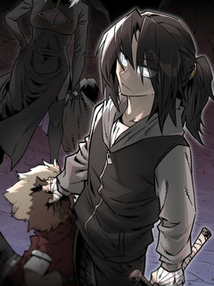
레진코믹스게임은 살인이다
정체불명의 가상현실 게임 '케이지' 자신과 인연이 있던 스승이자 어린아이인 <요를>을 GM인 유타기의 손에 잃고나서 유타기를 진심으로 죽이기 위한 방법을 찾기 위해 강해질 방법을 찾게 되는데... <내게 게임은 살인이다>의 정식 후속작.
게임소년물SF성장물판타지레진코믹스에서 보기 → -
28
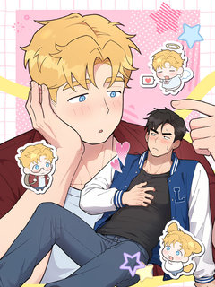
레진코믹스나의 천사를 찾아서
첫눈에 반해 결혼을 약속한 천사 같았던 옆집 여자아이. 10년 뒤 거구의 남성이 되어 돌아오다…!? 미국의 한 작은 마을에서 살고 있는 한국계 미국인 유진 킴. 10년 만에 옆집으로 돌아온 첫사랑 모건 라일리와 재회하지만, 눈앞에 나타난 건 거구의 금발 남성이 된 모건. 유진은 자신이…
떡대수상처공평범공키작공재회레진코믹스에서 보기 → -
29
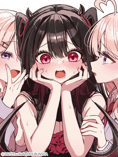
레진코믹스에구치네 순정 서큐버스
“에로란 대체 뭐야!!!!!” 지식은 있으나 에로를 전혀 이해하지 못하는 만화가 에구치 히비키. 에로란 대체 무엇인지 고민하던 히비키는 마찬가지로 에로에 대해 고민 중이던 서큐버스 미아와 만난다. 어딘가 닮은 두 사람은 ‘진정한 에로’를 이해하기 위해 협력하게 되는데…? 풋내기 만화가…
현대물계약연애첫사랑친구>연인성장물레진코믹스에서 보기 → -
30
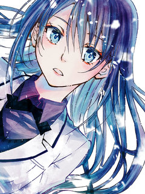
레진코믹스나도 모르는 사이에 학교 제일 미소녀를 꼬시고 있었던 것 같다 ~아르바이트에서 연애 상담을 했더니 갑자기 그녀가 부끄러워하기 시작했다~
취미의 독서를 통해서 친구가 된 학교 제일의 미소녀 사이토 레이나와 타나카 미나토. 그냥 친구일 터인데, 두 사람의 거리는 조금씩 좁혀져 간다! 어느 날, 연애에 서투른 미나토는 아르바이트 하는 곳의 선배 여자에게 연애 상담하게 되자 왠지 그녀의 얼굴은 새빨갛게 된다……? 별로 신경쓰…
러브코미디로맨틱코미디무심남학원물로맨스레진코믹스에서 보기 →